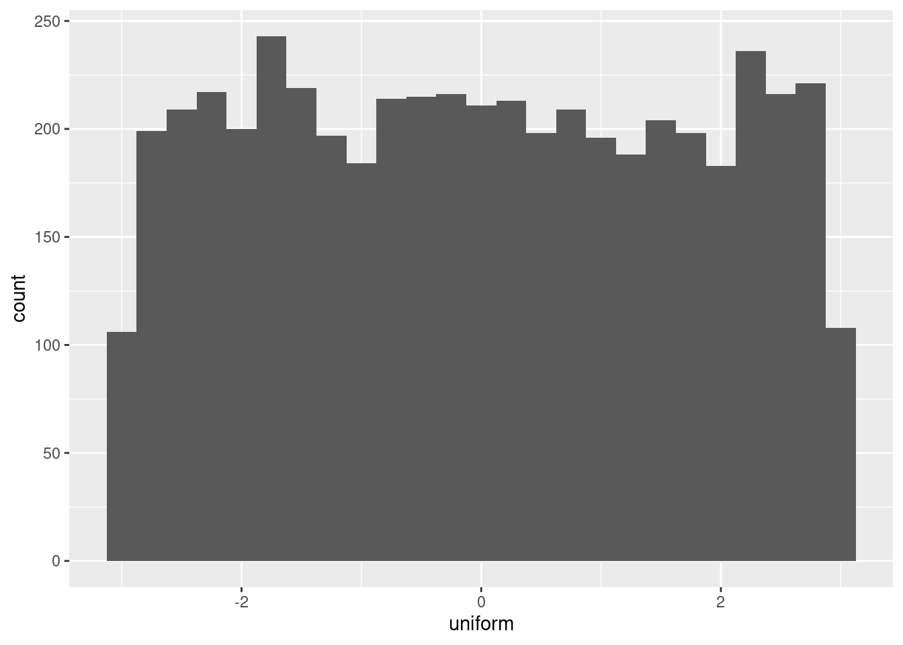
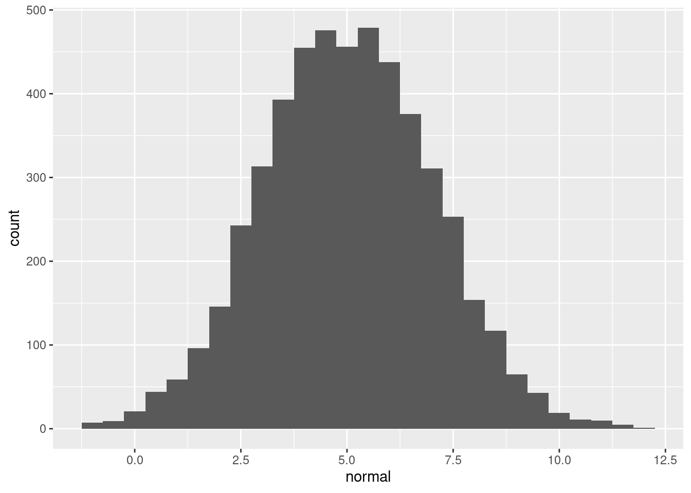

Sampling is an important technique in your statistical arsenal. It isn’t always appropriate though—you need to know when to use it and when to work with the whole dataset.
Which of the following is not a good scenario to use sampling?
when data set is small
Simple sampling with dplyr
Throughout this chapter you’ll be exploring song data from Spotify. Each row of the dataset represents a song, and there are 41656 rows. Columns include the name of the song, the artists who performed it, the release year, and attributes of the song like its duration, tempo, and danceability. We’ll start by looking at the durations.
Your first task is to sample the song dataset and compare a calculation on the whole population and on a sample.
spotify_population is available and dplyr is loaded.
library(tidyverse)library(fst)library(knitr)spotify_population <-read_fst("data/spotify_2000_2020.fst")# View the whole population dataset# Sample 1000 rows from spotify_populationspotify_sample <-slice_sample(spotify_population, n =10)# See the resultkable(spotify_sample)
acousticness
artists
danceability
duration_ms
duration_minutes
energy
explicit
id
instrumentalness
key
liveness
loudness
mode
name
popularity
release_date
speechiness
tempo
valence
year
0.00528
[‘Cher’]
0.548
202600
3.376667
0.915
0
1nu7ec0zCNvyHRrFXZsFHy
0.00e+00
0
0.1860
-7.010
1
Song for the Lonely
39
2005-03-22
0.0556
129.972
0.3800
2005
0.74100
[‘Sabrina Claudio’]
0.486
244910
4.081833
0.419
0
21oJ1K99GBJrE2GVQGVjA0
6.59e-05
5
0.0960
-6.415
1
Frozen
65
2017-10-05
0.0563
119.065
0.2270
2017
0.20900
[‘NF’]
0.676
312333
5.205550
0.304
0
4dfy1Pij4jFFefoamgnoOF
9.90e-06
5
0.1030
-10.649
0
You’re Special
63
2017-10-06
0.0634
119.895
0.0421
2017
0.11900
[‘James Yuill’]
0.640
223613
3.726883
0.619
0
2EWRUGLGX59cwdpIZjmkQO
3.80e-01
0
0.0597
-8.894
0
This Sweet Love
43
2009-05-26
0.0297
115.010
0.5630
2009
0.07610
[‘LMFAO’]
0.730
183693
3.061550
0.900
1
0Rdfu7NQubmGmYz90usRCU
0.00e+00
7
0.2380
-3.339
0
Yes
56
2009-01-01
0.0520
128.083
0.8960
2009
0.21400
[‘Smile’]
0.703
177453
2.957550
0.985
0
7DcFnnx39xo51joJJea2QB
9.18e-01
11
0.1390
-5.105
1
Butterfly
40
2005-09-26
0.0352
134.909
0.7760
2005
0.76300
[‘Johnny Cash’]
0.454
221600
3.693333
0.409
0
0eg0nRL9dLBaT0X43keMBc
7.30e-06
10
0.0834
-8.019
1
I See A Darkness
43
2000-01-01
0.0323
140.383
0.2680
2000
0.62800
[‘Queen Latifah’]
0.272
253800
4.230000
0.501
0
0r6iyod0kJyXH0igY0DpAb
0.00e+00
7
0.1180
-7.254
1
I Know Where I’ve Been - From “Hairspray”
46
2007-09-25
0.0323
173.856
0.2620
2007
0.14700
[‘BROCKHAMPTON’]
0.776
161000
2.683333
0.388
1
1xfFPJdRjgDAaMcDgbXwyh
0.00e+00
0
0.3940
-9.143
1
STAR
60
2017-06-09
0.2820
75.010
0.2940
2017
0.11300
[‘Rita Coolidge’]
0.490
185893
3.098217
0.515
0
0e6jrQ880TI8IjAexAmtb6
3.75e-05
3
0.1250
-8.919
0
All Time High
36
2000-01-01
0.0313
105.630
0.3430
2000
Simple sampling with dplyr
Throughout this chapter you’ll be exploring song data from Spotify. Each row of the dataset represents a song, and there are 41656 rows. Columns include the name of the song, the artists who performed it, the release year, and attributes of the song like its duration, tempo, and danceability. We’ll start by looking at the durations.
Your first task is to sample the song dataset and compare a calculation on the whole population and on a sample.
spotify_population is available and dplyr is loaded.
# Calculate the mean duration in mins from spotify_populationmean_dur_pop <-summarize(spotify_population, mean(duration_minutes))# Calculate the mean duration in mins from spotify_samplemean_dur_samp <-summarize(spotify_sample, mean(duration_minutes))# See the resultsmean_dur_pop
mean(duration_minutes)
1 3.852152
mean_dur_samp
mean(duration_minutes)
1 3.611492
Simple sampling with base-R
While dplyr provides great tools for sampling data frames, if you want to work with vectors you can use base-R.
Let’s turn it up to eleven and look at the loudness property of each song.
spotify_population is available.
# From previous steploudness_pop <- spotify_population$loudnessloudness_samp <-sample(loudness_pop, size =100)# Calculate the standard deviation of loudness_popsd_loudness_pop <-sd(loudness_pop)# Calculate the standard deviation of loudness_sampsd_loudness_samp <-sd(loudness_samp)# See the resultssd_loudness_pop
[1] 4.524076
sd_loudness_samp
[1] 5.045938
Are findings from the sample generalizable?
You just saw how convenience sampling—collecting data via the easiest method can result in samples that aren’t representative of the whole population. Equivalently, this means findings from the sample are not generalizable to the whole population. Visualizing the distributions of the population and the sample can help determine whether or not the sample is representative of the population.
The Spotify dataset contains a column named acousticness, which is a confidence measure from zero to one of whether the track is acoustic, that is, it was made with instruments that aren’t plugged in. Here, you’ll look at acousticness in the total population of songs, and in a sample of those songs.
spotify_population and spotify_mysterious_sample are available; dplyr and ggplot2 are loaded.
You’ve seen sample() and it’s dplyr cousin, slice_sample() for generating pseudo-random numbers from a set of values. A related task is to generate random numbers that follow a statistical distribution, like the uniform distribution or the normal distribution.
Each random number generation function has a name beginning with “r”. It’s first argument is the number of numbers to generate, but other arguments are distribution-specific. Free hint: Try args(runif) and args(rnorm) to see what arguments you need to pass to those functions.
n_numbers is available and set to 5000; ggplot2 is loaded.
n_numbers <-5000# Generate random numbers from ...randoms <-data.frame(# a uniform distribution from -3 to 3uniform =runif(n_numbers, -3, 3),# a normal distribution with mean 5 and sd 2normal =rnorm(n_numbers, mean =5, sd =2))# Plot a histogram of uniform values, binwidth 0.25ggplot(randoms, aes(uniform)) +geom_histogram(binwidth =0.25)

# Plot a histogram of normal values, binwidth 0.5ggplot(randoms, aes(normal)) +geom_histogram(binwidth =0.5)

Understanding random seeds
While random numbers are important for many analyses, they create a problem: the results you get can vary slightly. This can cause awkward conversations with your boss when your script for calculating the sales forecast gives different answers each time.
Setting the seed to R’s random number generator helps avoid such problems by making the random number generation reproducible. - The values of x are different to those of y.